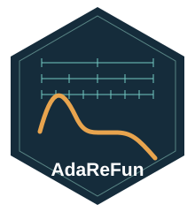
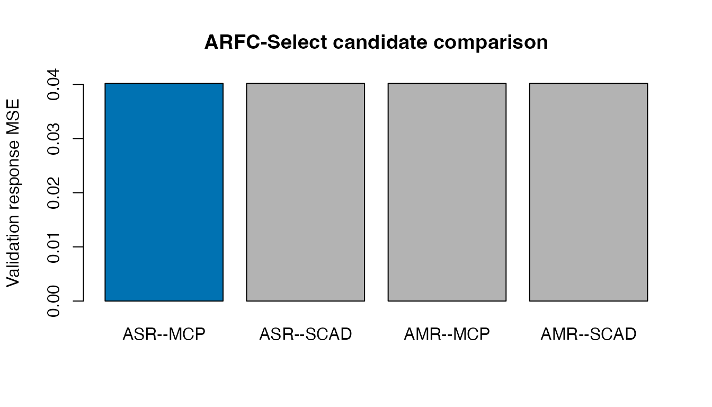
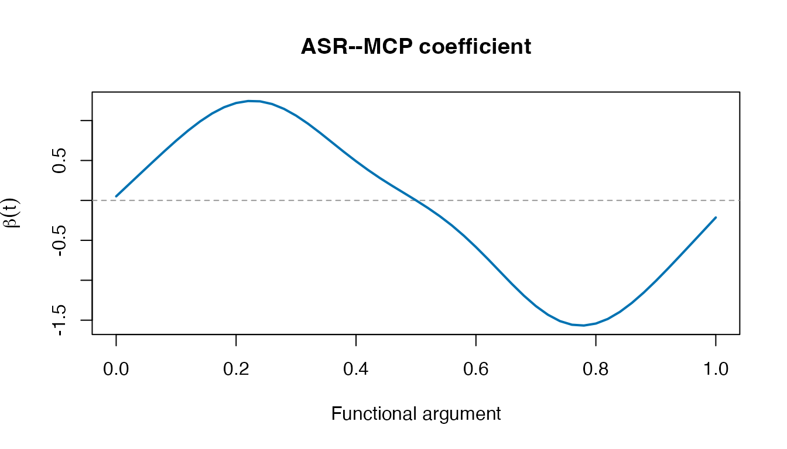

Get started: from curves to regions
Source:vignettes/getting-started.Rmd
getting-started.RmdAdaReFun fits scalar-on-function regression: each row is a sampled curve, and each curve has one scalar response. It is not a function-on-scalar or function-on-function fitting interface.
A small, reproducible demonstration
This artificial dataset illustrates the interface, not the paper’s performance claims. The training/validation split is explicit. No test set is used for selection. The modest tuning grids keep this example short.
set.seed(2026)
t <- seq(0, 1, length.out=51)
n <- 60
scores <- matrix(rnorm(n*6), n, 6)
x <- scores %*% t(sapply(1:6, function(j) sin(j*pi*t)))
beta <- ifelse(t >= .35 & t <= .65, 0, 1.5*sin(2*pi*t))
w <- c(.01, rep(.02,49), .01)
y <- .5 + drop(x %*% (w*beta)) + rnorm(n, sd=.15)x is an observations-by-grid matrix. t
contains argument locations on [0,1]; beta is
the demonstration truth. The vector w is a trapezoidal
integration rule used only to generate the synthetic response.
selection <- arfc_select(y[1:40], x[1:40,], t,
validation=list(y=y[41:60], x=x[41:60,]),
lambda=c(1e-4, 1e-3, 1e-2), kappa=c(1e-5, 1e-4),
levels=c(4L,8L,16L))
selection$selection
#> method label resolution penalty tie_priority validation_response_mse
#> 1 asr_mcp ASR--MCP single MCP 1 0.04018155
#> 2 asr_scad ASR--SCAD single SCAD 2 0.04018155
#> 3 amr_mcp AMR--MCP multi MCP 3 0.04018155
#> 4 amr_scad AMR--SCAD multi SCAD 4 0.04018155
#> difference_from_minimum tied selected
#> 1 0 TRUE TRUE
#> 2 0 TRUE FALSE
#> 3 0 TRUE FALSE
#> 4 0 TRUE FALSEInspect the choice and its coefficient
plot(selection, type="validation")
plot(selection, type="coefficient")
arfc_select() returns one training-fitted model. It
neither averages the four candidates nor silently refits on the
validation observations. For a stated resolution and penalty, use
arfc() directly. Predictions use the training centering
quantities:
head(predict(selection, x[41:60,]))
#> [1] 1.29714113 -0.04375299 0.40572326 -0.32381780 1.23279828 0.90044881Read the method guide before interpreting exact zeros as structural evidence. Finite-precision cutoff/refit conventions and convergence diagnostics matter.